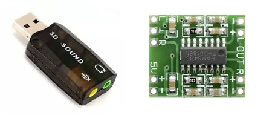
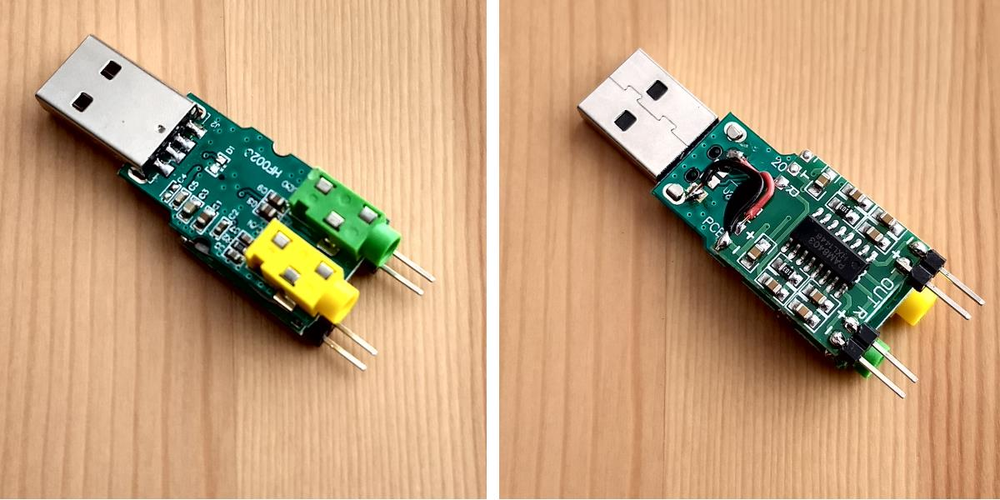
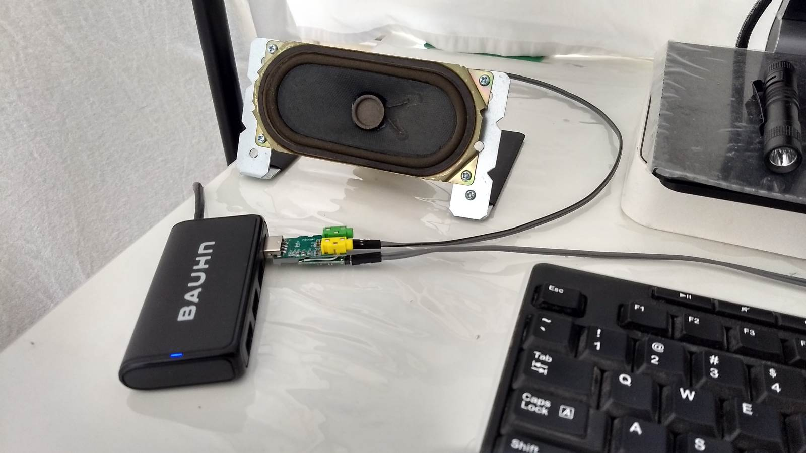

Here's a simple sound system for my PC that did not cost a cent since I already have all the parts. The aim is to
play sound from the PC without having to use a power adapter for the amplifier. To do that, 3 components
are required:
3D USB sound card (AU$6 ebay).
5V PAM8403 sound module (AU$1 ebay).
2 speakers

The PAM8403 amplifier is required as the stereo output from the sound card can only drive headphones,
not speakers. The steps to put the whole thing together are:
Solder male header pins onto the speaker pads on the PAM8403 sound module.
Strip the plastic shell from the sound card and solder wires from the stereo output socket pads to
the L-Gnd-R input pads of the PAM8403.
Solder wires from the USB 5V and Gnd pads on the sound card to the 5V-Gnd pads on the PAM8403.
Insert a piece of double-sided tape between the sound card and PAM8304 to hold them together.
The end result looks like this:

With diy speakers attached:

Playing Dire Straits' Sultans of Swing on the PC. This snippet was recorded with an Android phone: